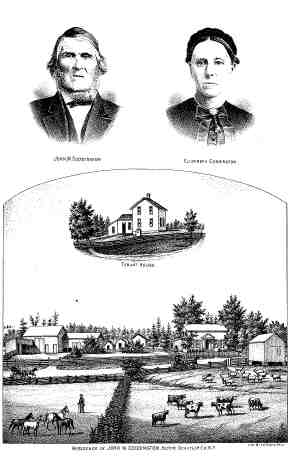

 Elizabeth M. DAVIS (Cir 1820-1885) |
Elizabeth M. DAVIS 14
Noted events in her life were: • Census, 1880, Hector, Schuyler Co., New York, USA. 2660 • Fact: mentioned in will of John Merlin Coddington, 3 May 1873, Hector, Schuyler Co., New York, USA. 802 Elizabeth married John Merlin CODDINGTON, son of Benjamin CODDINGTON and Maria, Betw 1870 and 1880 2660.,2706 (John Merlin CODDINGTON was born on 26 Mar 1786 in Fishing Creek, Northumberland Co., Pennsylvania, USA,565,2706,2707,2708 died on 2 Dec 1880 in Hector, Schuyler Co., New York, USA 565,2707 and was buried in Mecklenberg Cmty, Hector, Schuyler Co., New York, USA 565,2707.) |
|
only search Stockdale Coddington Genealogy |
Table of Contents | Surnames | Name List
This website was created 2 Apr 2025 with Legacy 10.0, a division of MyHeritage.com; content copyrighted and maintained by coddgenealogy at gmail d0t com